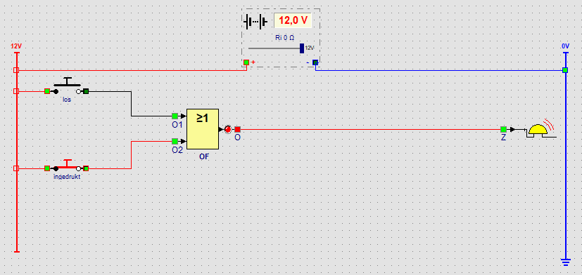

ODER-Gatter:
ODER-Gatter:Lernpfad › Lektion 5 von 44 · Stufe: Basis

Der Summer hat zwei Klemmen: Links kommt der Draht vom Gatter, rechts geht ein Draht zur −-Schiene. Ist der Ausgang des Gatters 1, gibt er 5 V, und es fließen 20 mA durch den Summer: genug, damit er summt.
Ein Haus hat einen Klingelknopf an der Vordertür und an der Hintertür. Welchen Knopf man auch drückt, die Klingel
muss läuten. Das ist ein ODER-Gatter:
| Vordertür (O1) | Hintertür (O2) | Klingel (Summer) |
|---|---|---|
| 0 | 0 | 0 |
| 0 | 1 | 1 |
| 1 | 0 | 1 |
| 1 | 1 | 1 |
Legen Sie die Tabelle neben die von Lektion 4. Bei UND muss alles ein sein, bei ODER genügt einer. Nur wenn beide Eingänge aus sind, ist der Ausgang des ODER-Gatters aus.
Ersetzen Sie in diesem Beispiel das ODER-Gatter durch ein UND-Gatter und probieren Sie beide Taster. Wann klingelt es jetzt? Ist das noch eine gute Türklingel?
Mit einem UND-Gatter klingelt es nur, wenn jemand an der Vordertür und jemand an der Hintertür gleichzeitig drückt. Mit einer Maus geht das nicht einmal. Für eine Türklingel ist das ODER-Gatter also die richtige Wahl.
Bauen Sie eine echte Türklingel mit zwei Tastern, z. B. einem an der Haustür und einem an der Hintertür. In der Arduino-Version sind die Taster Arduino-Eingänge (Pin 2 und 4). Der Ausgang des ODER-Gatters lässt den Summer auf dem Bildschirm summen und schaltet auch einen Arduino-Ausgang (Pin 8) mit dem echten Summer ein.